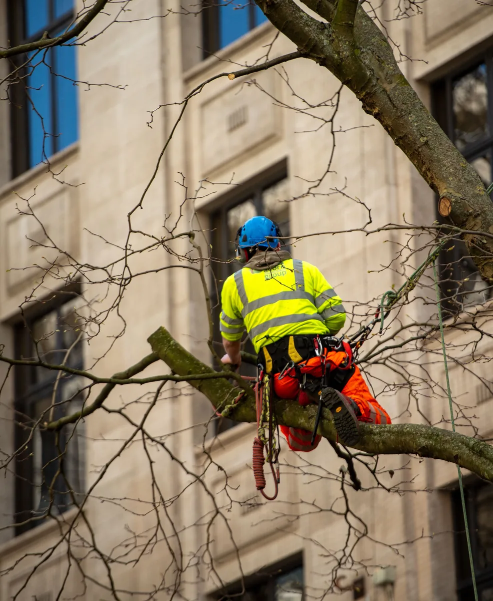

Onder de lokale maatgrens
Sommige gemeenten gebruiken een grens in stamomtrek of diameter. De meeteenheid en meethoogte verschillen.
Vrijblijvende offerte · Snel contact via WhatsApp of telefoon
Voor sommige bomen is geen vergunning nodig, terwijl voor andere situaties een gemeentelijke omgevingsvergunning of provinciale kapmelding geldt. De uitkomst hangt af van de exacte locatie, lokale regels, boommaat, bescherming en soms het eigendom. Ook nesten, beschermde soorten en herplantvoorwaarden blijven belangrijk. Doe daarom altijd de officiële Vergunningcheck voordat u werkzaamheden plant.

Eerst controleren
Er bestaat geen enkele landelijke stamdiameter waarmee u voor iedere boom kunt bepalen of een kapvergunning nodig is. Gemeenten, provincies, waterschappen en het Rijk kunnen regels stellen. Ook het omgevingsplan, de bebouwingscontour, een beschermde bomenlijst en natuurregelgeving kunnen de uitkomst veranderen.
Vul uw exacte adres en werkzaamheden in. De uitkomst kan een vergunningplicht, meldingsplicht, informatieplicht, verbod of vergunningsvrije situatie zijn. Dit overzicht helpt bij de voorbereiding, maar vervangt die persoonlijke controle niet.
Mogelijke uitzonderingen
Een lokale uitzondering kan gelden, maar nooit op basis van één landelijke checklist. Controleer altijd of andere regels van toepassing blijven.
Sommige gemeenten gebruiken een grens in stamomtrek of diameter. De meeteenheid en meethoogte verschillen.
Gemeenten zoals Zaanstad en Meppel werken sterk met beschermde lijsten, kaarten of aangewezen gebieden.
In onder meer Den Haag, Haarlem en Rijswijk bestaan uitzonderingen die samenhangen met tuin- of perceelgrootte.
Rotterdam maakt onderscheid tussen een natuurlijk persoon en rechtspersonen zoals een VvE of onderneming.
Sommige gemeenten kennen een uitzondering of noodprocedure. Elders blijft voorafgaande toestemming noodzakelijk.
Een gemeentelijke vergunning kan plaatsmaken voor een provinciale kapmelding, bijvoorbeeld bij grotere houtopstanden.
Vergelijking 2026
De tabel geeft een beknopt overzicht van officieel bevestigde hoofdregels. Uitzonderingen, beschermde bomen en natuurregels kunnen de uitkomst alsnog veranderen.
| Gemeente of gebied | Belangrijkste maatstaf | Belangrijke uitzondering | Bevestigde leges 2026 | Officiële controle |
|---|---|---|---|---|
| Amsterdam | Vanaf 31 cm stamomtrek op 130 cm hoogte | Ook een dode boom kan vergunningplichtig zijn | € 152 voor 1–5 bomen | Bekijk uitleg |
| Den Haag | Meestal vanaf 30 cm stamomtrek | In een kleine, niet-zichtbare achtertuin kan 90 cm gelden | Controleer actuele leges | Bekijk uitleg |
| Rotterdam | Algemeen vanaf 50 cm stamomtrek | Particuliere eigenaar doorgaans vrijgesteld tot 361 cm | € 476,80 voor niet-particuliere eigenaar | Bekijk uitleg |
| Utrecht | Beslisboom met diameter, perceelgrootte en leeftijd | Onder 15 cm diameter is geen vergunning nodig | € 735 voor 1–5 bomen | Bekijk uitleg |
| Haarlem | Vanaf 50 cm stamomtrek op 130 cm hoogte | Klein perceel en niet zichtbaar vanaf de weg kan vrijgesteld zijn | € 150 per boom | Bekijk uitleg |
| Rijswijk | Meer dan 15 cm stamdiameter op 130 cm hoogte | Uitzonderingen voor kleine voor- en achtertuinen | € 93,35 | Bekijk uitleg |
| Delft | Uitkomst afhankelijk van boom en locatie | Controleer de gemeentelijke voorwaarden | € 151,85 | Bekijk uitleg |
| Zaanstad / Zaandam | Beschermde bomenlijst en gebiedenkaart | Op eigen terrein alleen vergunning in aangewezen gevallen | Controleer actuele leges | Bekijk uitleg |
| Midden-Drenthe | Vanaf 40 cm stamdiameter op 130 cm hoogte | Buiten de bebouwde kom kan een provinciale melding gelden | € 108,50 | Bekijk uitleg |
| Westerveld | 100 cm stamomtrek en locatiegebonden regime | Beschermde bomen en gebieden blijven vergunningplichtig | € 177,72 | Bekijk uitleg |
| Meppel | Monumentale bomen en Groene Kaart | Veel gewone tuinbomen zijn vergunningvrij | € 22,85 | Bekijk uitleg |
Noord-Holland
Amsterdam noemt als hoofdregel een vergunning bij een stamomtrek van 31 centimeter of meer, gemeten op 130 centimeter boven de grond. Ook voor een dode boom kan een vergunning nodig zijn. Voor één tot en met vijf bomen bedragen de leges in 2026 € 152.
Officiële bron: Gemeente Amsterdam – boom kappen of snoeien.
Zuid-Holland
In Den Haag geldt meestal een grens van 30 centimeter stamomtrek. Staat de boom in een achtertuin kleiner dan 50 m² en is deze niet zichtbaar vanaf de openbare weg, dan kan een grens van 90 centimeter gelden. De omtrek wordt op 130 centimeter hoogte gemeten.
Lees de uitgebreide lokale uitleg over een boom laten rooien in Den Haag.
Officiële bron: Gemeente Den Haag – vergunning boom kappen.
Zuid-Holland
De Rotterdamse APV noemt een algemene vergunninggrens vanaf 50 centimeter stamomtrek op 130 centimeter hoogte. Voor een natuurlijk persoon die zakelijk gerechtigde is, geldt doorgaans een uitzondering zolang de stamomtrek kleiner is dan 361 centimeter. Voor een VvE, onderneming, stichting of woningcorporatie kan de algemene regel wel relevant zijn.
Bekijk de volledige regels voor boom rooien in Rotterdam, inclusief uitleg over erfpacht en eigendom.
Officiële bronnen: Rotterdamse APV en Gemeente Rotterdam – bomen.
Utrecht
Utrecht gebruikt een beslisboom. Daarbij tellen onder meer de stamdiameter op 130 centimeter hoogte, perceelgrootte en ouderdom van de boom mee. Een boom met een diameter kleiner dan 15 centimeter is vergunningvrij. Voor één tot en met vijf bomen bedragen de leges in 2026 € 735.
Officiële bron: Gemeente Utrecht – boom kappen.
Noord-Holland
In Haarlem is geen vergunning nodig als de boom op 130 centimeter hoogte dunner is dan 50 centimeter in omtrek. Een tweede uitzondering kan gelden wanneer het hele perceel kleiner is dan 100 m² en de boom niet zichtbaar is vanaf de openbare weg. De aanvraag bevat onder meer een herplantplan of uitleg waarom herplant niet kan.
De officiële leges bedragen in 2026 € 150 per boom. Na verlening geldt volgens de gemeentepagina een bezwaartermijn van zes weken voordat met kappen wordt begonnen.
Officiële bron: Gemeente Haarlem – kapvergunning.
Zuid-Holland
Rijswijk noemt als uitgangspunt een vergunning voor een boom die dikker is dan 15 centimeter in doorsnede, gemeten op 130 centimeter hoogte. Er zijn uitzonderingen voor onder meer een voortuin kleiner dan 20 m² en een achtertuin kleiner dan 50 m². Ook voor bepaalde bomen en noodsituaties bestaan uitzonderingen.
De behandelingskosten bedragen in 2026 € 93,35. De beslissing volgt normaal binnen acht weken en kan eenmaal met zes weken worden verlengd.
Officiële bron: Gemeente Rijswijk – kapvergunning.
Zuid-Holland
Voor Delft moet de vergunningplicht aan de hand van de boom, locatie en gemeentelijke regels worden gecontroleerd. De gemeente vermeldt voor 2026 € 151,85 aan behandelingskosten voor een omgevingsvergunning om een boom te kappen. Dit bedrag staat los van de uitvoering van het boomwerk.
Officiële bron: Gemeente Delft – omgevingsvergunning boom kappen.
Zaandam valt onder Zaanstad
Zoekt u naar een kapvergunning in Zaandam, dan gelden de regels van gemeente Zaanstad. Op eigen terrein is alleen een vergunning nodig wanneer de boom op de lijst met beschermde particuliere bomen staat of binnen een gebied op de kapvergunningkaart valt. Voor bomen op een openbare plaats geldt wel een vergunningplicht.
Ook het snoeien van meer dan 20% van een boom of wortels, of snoei waardoor de vorm verandert, kan onder de regels vallen. Controleer daarom de beschermde bomenlijst, gebiedenkaart en Vergunningcheck voordat u een boom in Zaandam kapt.
Officiële bron: Gemeente Zaanstad – bomen kappen en snoeien.
Gemeente én provincie
“Kapvergunning Drenthe” is geen uniforme provinciale regel voor iedere tuinboom. Binnen de bebouwingscontour en voor losse tuinbomen gelden vaak gemeentelijke regels. Voor grotere houtopstanden buiten die contour kan een provinciale kapmelding gelden.
In Drenthe geldt buiten de bebouwingscontour een meldingsplicht voor een houtopstand groter dan 10 are (1.000 m²) of een bomenrij van meer dan 20 bomen. De melding wordt minimaal vier weken en maximaal één jaar voor de kap gedaan. Na kap geldt doorgaans herplant binnen drie jaar. Losse bomen in tuinen en op erven zijn van deze provinciale regel uitgezonderd.
Vergunning vanaf 40 centimeter stamdiameter op 130 centimeter hoogte. De gemeente noemt in 2026 € 108,50 behandelingskosten. Buiten de bebouwde kom en niet op een erf kan een provinciale melding nodig zijn.
Een boom tot 100 centimeter stamomtrek op 130 centimeter hoogte kan vergunningvrij zijn, maar alleen als het locatiegebonden regime dit toestaat. Beschermde bomen en landschapselementen op de gemeentelijke kaart blijven vergunningplichtig. De leges bedragen in 2026 € 177,72.
Veel gewone bomen in een eigen tuin kunnen zonder vergunning worden gekapt. Monumentale bomen en houtopstanden op de Groene Kaart zijn beschermd. De behandelingskosten bedragen in 2026 € 22,85.
Praktisch meten
Gemeenten gebruiken niet altijd dezelfde meeteenheid. Controleer dus of omtrek of diameter wordt gevraagd en welke regels gelden voor een meerstammige boom.
Leges 2026
U betaalt leges voor het in behandeling nemen van de aanvraag. Betaling kan ook verschuldigd zijn wanneer de vergunning wordt geweigerd of de aanvraag wordt ingetrokken. Sommige gemeenten rekenen per boom; andere gebruiken één bedrag voor meerdere bomen.
De bedragen hierboven gaan alleen over behandeling van de vergunningaanvraag. Een boomtechnisch onderzoek, ecologisch onderzoek, het kappen, afvoeren en boomstronk laten verwijderen kunnen aparte kosten veroorzaken.
Voorbereiding
De precieze vereisten verschillen per overheid, maar met deze informatie kunt u de meeste aanvragen goed voorbereiden.
Procedure
De concrete beschikking en voorwaarden zijn altijd leidend. Onderstaand proces is een algemeen beeld van een reguliere aanvraag.
Controleer de locatie, verzamel bijlagen en dien de aanvraag via het Omgevingsloket in.
De reguliere procedure heeft meestal een termijn van acht weken. Verlenging kan mogelijk zijn.
De aanvraag en het besluit worden gepubliceerd. Belanghebbenden kunnen doorgaans binnen zes weken bezwaar maken.
Begin pas wanneer de vergunning gebruikt mag worden en wachttermijnen, natuurregels en herplantvoorwaarden zijn nageleefd.
Bekendmaking
Aanvragen en besluiten worden openbaar bekendgemaakt. Belanghebbenden kunnen doorgaans binnen zes weken bezwaar maken. Een bezwaar schort uitvoering niet in iedere situatie automatisch op. Bij onomkeerbare werkzaamheden kan een belanghebbende een voorlopige voorziening vragen om uitvoering tijdelijk tegen te houden.
Controleer als vergunninghouder daarom de ingangsdatum, bezwaartermijn en eventuele specifieke wachttijd in het besluit. Sommige gemeenten schrijven expliciet voor dat u gedurende de volledige bezwaartermijn nog niet mag kappen.
Natuurregels blijven gelden
Er bestaat geen universele wettelijke begin- en einddatum die voor alle vogels geldt. De feitelijke aanwezigheid van een broedgeval is bepalend en sommige nestplaatsen zijn het hele jaar beschermd. Ook met een kapvergunning mogen actieve nesten of beschermde verblijfplaatsen niet zonder meer worden beschadigd of verstoord. Controle vooraf en soms ecologisch onderzoek kunnen noodzakelijk zijn.
Twee verschillende routes
Beide verplichtingen kunnen naast natuurregels en andere toestemmingen bestaan.
Na toestemming
Een vergunning of provinciale regeling kan voorschrijven dat een nieuwe boom wordt geplant. In de voorwaarden kan staan binnen welke termijn, op welke locatie en met welke soort of maat dit moet gebeuren. Wanneer herplant niet mogelijk is, kan een gemeente een financiële bijdrage aan een Bomenfonds of herplantfonds verlangen.
Vaak heeft herplant op of dichtbij de oorspronkelijke locatie de voorkeur.
De overheid kan voorwaarden stellen aan boomsoort, maat, onderhoud en locatie.
Bedragen en voorwaarden verschillen lokaal. Er bestaat geen landelijk vast tarief.
Eigendom eerst vaststellen
De grondeigenaar of zakelijk gerechtigde doet doorgaans de aanvraag. Een huurder mag niet zelfstandig een boom van de verhuurder kappen. Bij een VvE kunnen besluitvorming en toestemming nodig zijn. Staat een boom op of vlak bij de erfgrens, stel dan eerst vast wie eigenaar is. Voor een gemeenteboom dient u een verzoek bij de gemeente in; u kunt deze niet zelf laten verwijderen.
Van toestemming naar uitvoering
Een vergunning zegt nog niets over de veiligste werkmethode, bereikbaarheid, afvoer, inzet van materieel of uitvoeringskosten. Laat daarom ook de praktische situatie beoordelen.
Bekijk wat er komt kijken bij een boom laten kappen, lees over boomstronk laten verwijderen of vraag direct een prijs op basis van uw boom en tuin aan.
Veelgestelde vragen
De antwoorden hieronder geven algemene richting. De Vergunningcheck en de voorwaarden van uw eigen besluit zijn altijd leidend.
Doe de officiële VergunningcheckDat hangt af van uw exacte adres, de gemeente, de afmetingen en bescherming van de boom en soms ook van de eigenaar of het type perceel. Een boom in een eigen tuin is dus niet automatisch vergunningvrij. Voer altijd de officiële Vergunningcheck uit en controleer daarnaast of de boom op een beschermde lijst of kaart staat.
Er bestaat geen landelijke grens die in iedere gemeente geldt. Amsterdam gebruikt bijvoorbeeld 31 centimeter omtrek, Haarlem 50 centimeter en Den Haag meestal 30 centimeter, terwijl andere gemeenten met diameter, perceelgrootte of een beschermde bomenkaart werken. Controleer bovendien op welke hoogte u moet meten; vaak is dat 130 centimeter boven het maaiveld.
De leges verschillen sterk per gemeente en soms per aantal bomen. In 2026 lopen de bevestigde voorbeelden op deze pagina uiteen van € 22,85 in Meppel tot € 735 voor één tot en met vijf bomen in Utrecht. Dit zijn behandelingskosten van de aanvraag en niet de kosten voor het kappen, afvoeren of verwijderen van de boomstronk.
De reguliere procedure heeft meestal een beslistermijn van acht weken. De overheid kan deze termijn in bepaalde situaties verlengen. Na bekendmaking kunnen daarnaast bezwaar- en wachttijden gelden. Plan onomkeerbare werkzaamheden daarom pas wanneer duidelijk is dat de vergunning gebruikt mag worden en alle voorwaarden zijn gecontroleerd.
Niet overal. Sommige gemeenten noemen een uitzondering voor een dode of acuut gevaarlijke boom, terwijl andere gemeenten ook voor een dode boom een vergunning of voorafgaande toestemming verlangen. Bij direct gevaar kan een noodprocedure gelden. Meld de situatie bij de bevoegde overheid en laat niet uitsluitend op basis van de algemene staat van de boom kappen.
Een kapvergunning geeft geen toestemming om actieve nesten of beschermde verblijfplaatsen te beschadigen. Er bestaat geen universele wettelijke periode waarin iedere boom automatisch wel of niet mag worden gekapt. De feitelijke aanwezigheid van broedende vogels en andere beschermde dieren is bepalend. Voorafgaande controle en soms ecologisch onderzoek kunnen nodig zijn.
Een kapvergunning is meestal een gemeentelijke omgevingsvergunning voor een individuele of beschermde boom. Een kapmelding kan onder provinciale regels gelden voor grotere houtopstanden of bomenrijen buiten de bebouwingscontour. De verplichtingen kunnen samengaan met natuurregels, een wachttermijn en een herplantplicht. De Vergunningcheck laat zien welke route bij uw locatie past.
Doorgaans kan alleen de eigenaar of iemand met schriftelijke toestemming van de eigenaar de aanvraag indienen. Een huurder, buur of andere belanghebbende kan een boom niet zelfstandig laten kappen. Staat de boom op of vlak bij de erfgrens, stel dan eerst vast wie eigenaar is en welke toestemming nodig is.
Boomwerk laten beoordelen
Heeft u de vergunningplicht gecontroleerd? Stuur dan foto’s van de volledige boom, stam, omgeving en toegangsroute. Geef ook de stammaat, vergunningstatus en gewenste werkzaamheden door. U ontvangt duidelijkheid over de mogelijke aanpak en kosten.